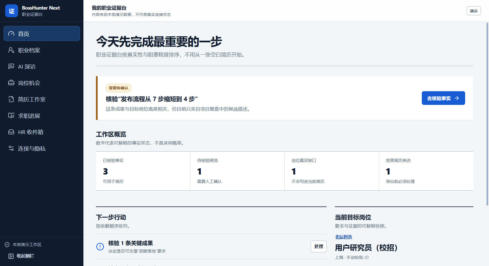

OPEN SOURCE / PROJECT FIELD NOTES
BossHunter Next
先核验经历，再为每个岗位组织真实证据。
这是Windows桌面应用的静态项目导览，截图为程序既有的本地演示工作区。完整导入、AI深访和简历导出需要从当前源码运行；本页不模拟真实账号连接。
从源码运行 ↓
01 / EXPLORE
从问题，到实现。
职业证据库
导入文档、整理个人事实与候选记录，核验后再用于岗位简历。图中是项目自带本地演示数据，不代表连接真实招聘平台。
02 / RUN LOCALLY
把项目带到你的环境。
以下为运行入口；数据库、服务密钥与平台账号由使用者自行配置。复制命令前先阅读仓库README的完整前置条件。
获取源码
git clone https://github.com/yangwei251003/zhiyou.git
启动开发
cd zhiyou pnpm install --frozen-lockfile pnpm dev
质量检查
pnpm quality pnpm test:coverage pnpm test:e2e
公开体验的范围
这是Windows桌面应用的静态项目导览，截图为程序既有的本地演示工作区。完整导入、AI深访和简历导出需要从当前源码运行；本页不模拟真实账号连接。
本页面提供项目说明、源码入口与真实画面，不提交登录信息、不请求AI模型、不接触支付或私人数据库。应用的完整行为以源码及README所列部署方式为准。
阅读README与验证边界 ↗